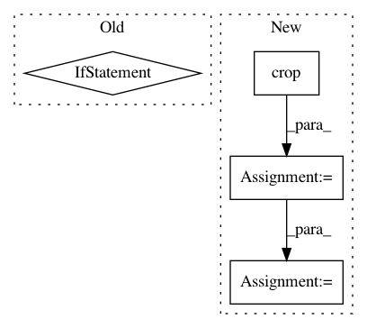

11c6bf1dbd051d087519ff771b39dac600c0d96d,batchflow/models/tf/encoder_decoder.py,EncoderDecoder,head,#Any#Any#Any#Any#,163
Before Change
if filters is None:
filters = channels
elif isinstance(filters, int):
if filters != channels and "layout" in kwargs:
filters = [filters] * filters_needed(kwargs["layout"])
if isinstance(filters, (list, tuple)) and len(filters) > 0:
if isinstance(filters, tuple):
filters = list(filters)
filters[-1] = channels
After Change
channels = cls.num_channels(targets)
if cls.num_channels(x) != channels:
with tf.variable_scope("final"):
x = cls.crop(x, targets, kwargs["data_format"])
args = cls.combine_kwargs(kwargs, dict(layout="c", kernel_size=1, filters=channels))
x = conv_block(x, **args)
return x
@classmethod
In pattern: SUPERPATTERN
Frequency: 3
Non-data size: 4
Instances
Project Name: analysiscenter/batchflow
Commit Name: 11c6bf1dbd051d087519ff771b39dac600c0d96d
Time: 2019-07-29
Author: 7520522+a-arefina@users.noreply.github.com
File Name: batchflow/models/tf/encoder_decoder.py
Class Name: EncoderDecoder
Method Name: head
Project Name: junyanz/BicycleGAN
Commit Name: 219b3f98001448eff5f2cbb5467940b6a2bfb4fe
Time: 2018-09-03
Author: junyanzhu89@gmail.com
File Name: data/aligned_dataset.py
Class Name: AlignedDataset
Method Name: __getitem__
Project Name: analysiscenter/batchflow
Commit Name: 53f15232ed13154bc5338dc002b43c3c62547ea7
Time: 2017-11-12
Author: rhudor@gmail.com
File Name: dataset/models/tf/unet.py
Class Name: UNet
Method Name: upsampling_block